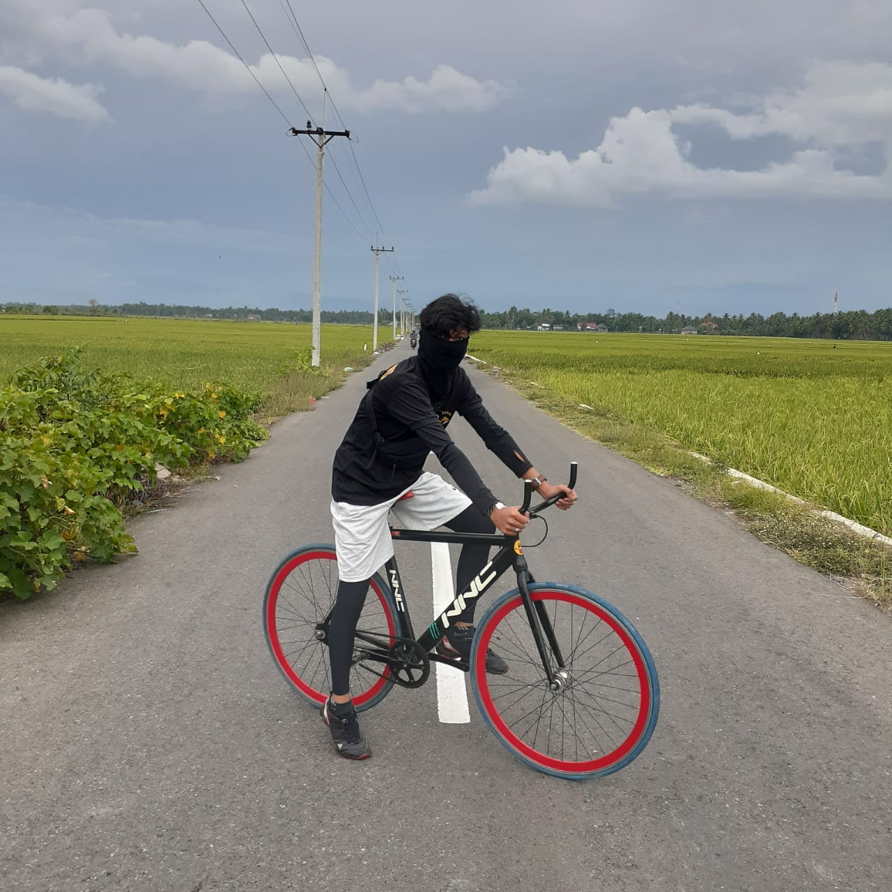

|

Hobi Saya Utama adalah Bersepeda, tau kah kalian , bersepeda banyak manfaat yang kita dapat Seperti :
- Menstabilkan Diabetes
- Mencegah Resiko darah tingi
- Mencegah Resiko Jantung
- menurunkan depresi
- meningkatkan kekuatan otak
- mengatasi imsonia
- menurunkan resiko kanker
- meningkatkan kemampuan s**
- dapat menambah tinggi badan
|